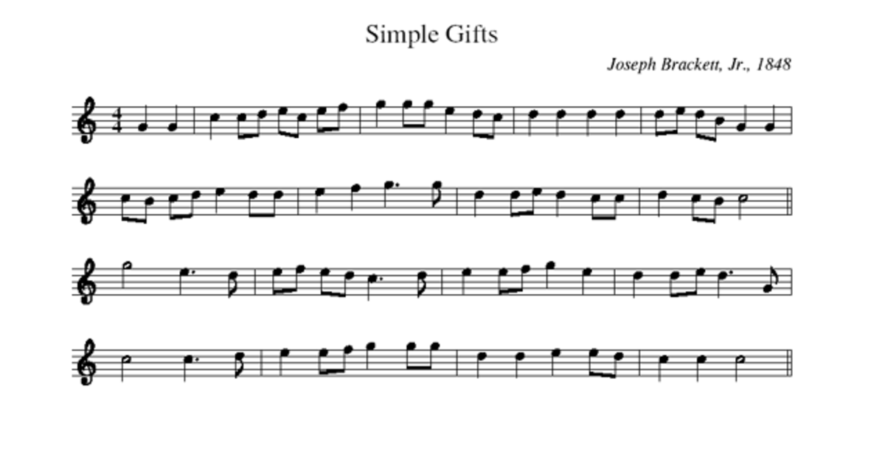
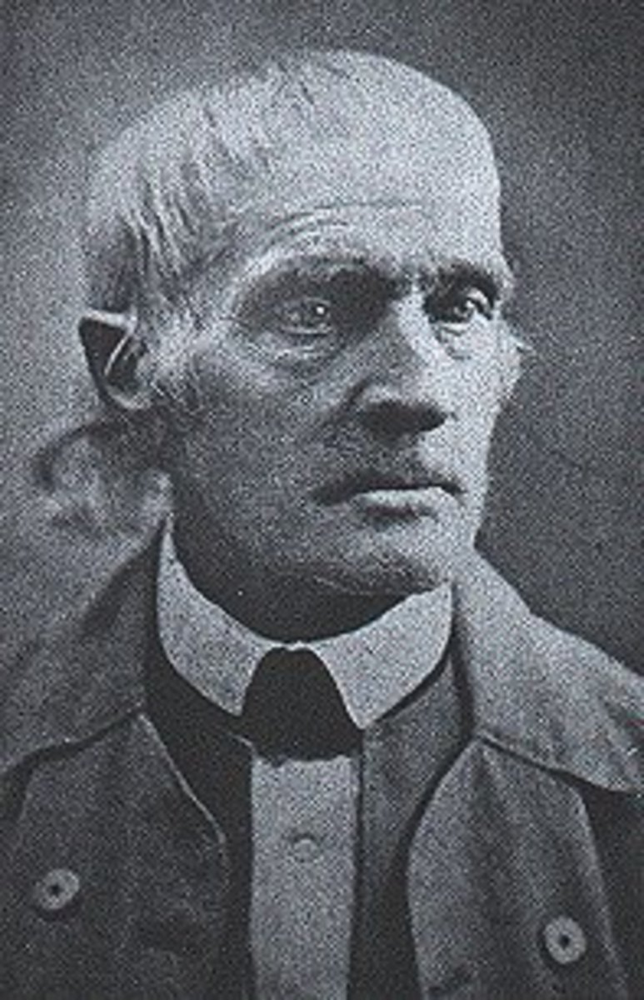
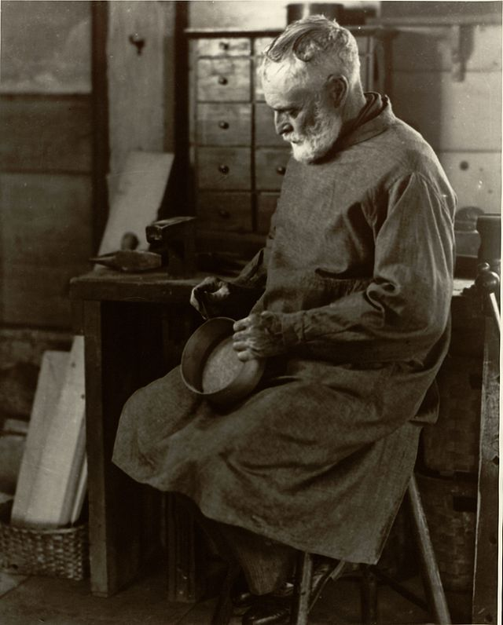
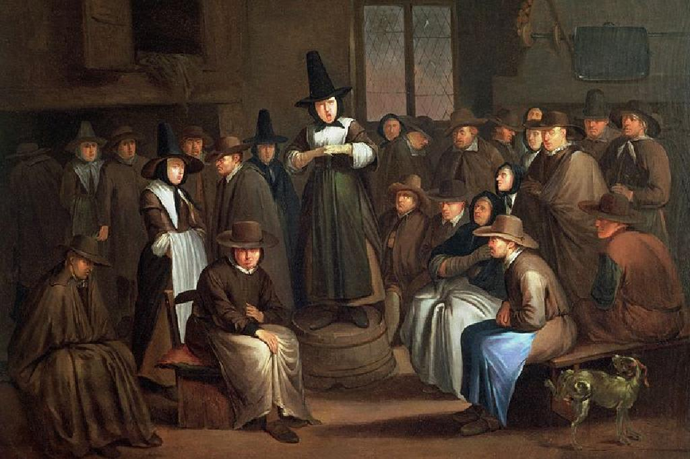
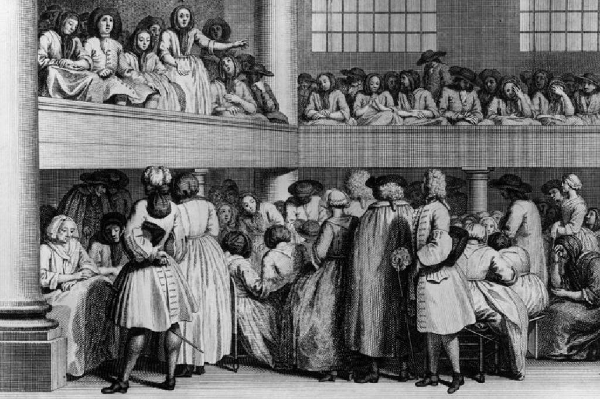

|
|
|
|
1 I danced in the morning when the world was begun, Refrain: 2 I danced for the scribe and the Pharisee, 3 I danced on the Sabbath and I cured the lame, 4 I danced on a Friday when the sky turned black; 5 They cut me down and I leapt up high,
|
1.我在世界初創的早晨
基督是主第 1 集，23 |
|
|
|
|
|
|


I Danced In The Morning (Dance Then Wherever) https://www.youtube.com/watch?v=Bf93gp-HafA - 跳舞之主
https://youtu.be/FnsRx04MBXU -
Lord of the Dance 2011 / Live from O2 Arena, London
https://youtu.be/L5fPTELEHsI - 跳舞之主 Lord of the Dance by Neil Harmon 台北靈糧堂 雅歌詩班
https://youtu.be/bLWlWo019W4 - 'Simple Gifts' (from Appalachian Spring) - Shaker Folk Song · Aaron Copland https://www.youtube.com/watch?v=aW0ekj3x9Z0
- A Shaker Worship Service by Salli Terri Featuring the University of Kentucky Choristers https://youtu.be/fcoAkNU24Vw
-
Museum President David Stocks narrates an introductory to the North Family,
one of eight groups of Shakers who lived and worked together at the Mount
Lebanon Shaker Village from 1787-1947.
https://youtu.be/OYjwcKxCp84
| Text: | I Danced in the Morning |
| Author: | Sydney Carter |
| Tune: | LORD OF THE DANCE |
| Adapter: | Sydney Carter |
| Short Name: | Sydney Carter |
| Full Name: | Carter, Sydney, 1915-2004 |
| Birth Year: | 1915 |
| Death Year: | 2004 |
| Text Information | |
|---|---|
| First Line: | I danced in the morning when the world was begun |
| Title: | I Danced in the Morning |
| Author: | Sydney Carter (1963) |
| Refrain First Line: | Dance, then, wherever you may be |
| Meter: | Irregular |
| Language: | English |
| Publication Date: | 2013 |
| Scripture: | ; ; ; ; |
| Topic: | Christian Year: Nativity/Christmas; Christian Year: Baptism of Jesus; Christian Year: Transfiguration (6 more...) |
| Copyright: | © 1963 Stainer & Bell, Ltd. (admin. Hope Publishing Company) |
Tune Information
| Title: | SIMPLE GIFTS |
| Composer: | Joseph Brackett |
| Meter: | Irregular with refrain |
| Incipit: | 55112 31345 55321 |
| Key: | G Major |
| Source: | American Shaker melody |
| Copyright: | Public Domain |

跳舞之主 Lord Of The Dance
這是一首歴史久遠的愛爾蘭民謠，被輾轉改編、使用，最後成了一首非常受大眾歡迎的歌，就是這首「舞蹈之主」。
首先這首輕快、動聽的民謠，被英國的震顫教派 (Shakers) 長老若瑟•布列克（Joseph Brackett
Jr.,1797-1882）看中了。震顫教派前身是英格蘭貴格會中的一個較偏激的支派——基督復臨歸一會，為逃避迫害於1774年由李•安納（A.
Lee）女士帶入美國。
震顫教派信徒與外界隔絕，他們獨身，過著非常「原始」的團體農耕及手工生活。他們的特色之一是祈禱時不排除身體搖動，以至用跳舞來表達內心的感召。
布列克長老就在1848年間為這一首民謠配上歌辭，除了做陪伴舞蹈的音樂以外，還可以吟唱。這首歌叫做「簡單的禮物」(Simple Gifts)。
主要是強調他們的信念：純樸、簡單的生活是上主的大恩賜。
這首歌曲的第二個轉折，是美國當代的大音樂家柯普朗 (Aaron Copland)
在1944年把它放進了他最出名的芭蕾舞樂曲阿帕拉契亞之春(Appalachian Spring) 裡 ，後來又改成其他編制，因而使這首曲子的知名度大為提升。
歐巴馬 (Barack Obama 2009) 請了約翰•威廉士 (John Williams) 給這曲子編寫了一首四重奏：「抒情調與簡單的禮物」(Air
and simple Gift)
，在典禮上演出。值得一提的是，四重奏是由四位不同種族的音家擔任：以色列猶太人、華人、黑人跟南美委內瑞拉人。這樣，除了不單是為配合典禮的隆重，也呈現了政治上的融合及基督信仰的強烈意涵。
最後，這首民謠是由一位極受歡迎的音樂家，同時又是反戰的社會工作者悉尼•卡特 (Sydney Carter)
於1963年改編：就是目前的「舞蹈之主」。它的五段歌詞如下：
歌詞
Lord Of The Dance
1. I danced in the morning When the world was begun, And I danced in the moon
And the stars and the sun, And I came down from the heaven And I danced on the
earth, At Bethlehem I had my birth. 《Refrain》Dance, then, wherever you may be, I
am the Lord of the Dance, said he, And I'll lead you all, wherever you may be,
And I'll lead you all in the dance, said he.
1. 我在清晨 - 世界開始運轉之際 - 跳舞：我在月亮、星辰和太陽之間跳著，我從天而降，跳到世界上來：我出生在白冷。 《副歌》盡情跳舞吧！不論你身在何處，
祂說：我是舞蹈之主。無論在哪裡，我都會領導你們，領導大家起舞。
2. I danced for the scribe And the Pharisee, But they would not dance And they
wouldn't follow me. I danced for the fishermen For James and John— They came
with me And the dance went on.
2. 我給經師和法利賽人跳舞，但他們不肯就我：他們不肯跳。我給漁夫雅各和若望跳，他們就跟著我：舞蹈遂能延續不斷。
3. I danced on the Sabbath And I cured the lame; The holy people Said it was a
shame, They whipped and they stripped And they hung me on high And they left me
there On a cross to die.
3. 我在安息日跳舞：我治好了瘸子聖民卻說我不知羞恥。他們鞭打我、把我剝光，然後把我高掛在十字架上，讓我死在那裡。
4. I danced on a Friday When the sky turned black – It's hard to dance with the
devil on your back. They buried my body And they thought I'd gone, But I am the
Dance, And I still go on.
4. 我在一個星期五跳舞：天色轉為晦暗 - 有惡魔糾纏著你時，跳舞可不容易。他們埋葬了我的軀體：以為我就此完蛋。但我就是舞蹈：我不會休止。
5. They cut me down And I leapt up high； I am the life That'll never, never die；
I'll live in you If you'll live in me － I am the Lord Of the Dance, said he.
5. 他們把我擊倒，我卻縱身而起：我就是生命 - 那永遠不死的生命。若你們住在我內，我也會住在你們內。祂說：我是舞蹈之主。
轉載
我的心靈，靜下來吧！在安靜與誠實中，往內心深處探尋神性的圓滿
而知名的愛爾蘭舞王，當然也使用這版本的民謠
歐聲版本
1.我在世界初創的早晨
跳著舞
太陽星星月亮
與我同飛舞
眾樹木都搖擺
海的浪澎湃
大地跟著我
一起跳起來
（副歌）跳 跳吧 盡情地跳舞
隨著我的腳步
我是跳舞之主
讓喜樂成為你的舞步
跟著我一起走這人生路
2.天使牧羊人
在平安夜跳著舞
彼得約翰雅各
跟著我腳步
我使軟弱的人
心中不再悲哀
你若傷心
就跟我一起來
（副歌）跳 跳吧 盡情地跳舞
隨著我的腳步
我是跳舞之主
讓喜樂成為你的舞步
跟著我一起走這人生路
口白：我使哀哭變為跳舞
我是帶來歡笑的主
孩子 我邀請你一同跳舞
孤單的黑夜 我陪著你
讓我牽著你的手
踏著救恩的舞步
繼續飛舞
（副歌）跳 跳吧 盡情地跳舞
隨著我的腳步
我是跳舞之主
讓喜樂成為你的舞步
跟著我一起走這人生路
3.在各各他的山上
我被釘十字架
我的身體在那
墳墓裡埋葬
但我三天后
從死裡復活了
戰勝死亡的君王
就是我
（副歌）跳 跳吧 盡情地跳舞
隨著我的腳步
我是跳舞之主
讓喜樂成為你的舞步
跟著我一起走這人生路
http://worshipmusicsean.blogspot.com/2016/08/lord-of-dance.html
隨主起舞—— 聽「舞蹈的主」詩歌有感
2019年的初冬，到華府住一段日子。由於天氣關係，週日常刮刺骨的寒風或下大雨，不方便用近一小時的時間去中國城的華人教會，改為參加離住家走路只有三分鐘的「美以美教會」主日崇拜。
記憶中，十月下旬的主日崇拜有好幾次的大標題是「 A Season of Saints (聖者的季節）」。教會用了一幅「Lord of the Dance (舞蹈的主）」的畫為主題，每週推薦的一位聖者。
教會的週報上特別提到，感謝「舊金山」「尼薩（（NysSan)」聖格里髙利（St. Gregory)聖公會」的許可，使用了他們教會圓形大廳四週那「舞蹈的主」的畫作。這壁畫完工於2009年，畫面包含了九十位比真人還大的聖者，四隻動物，日，月，星星以及十二英呎高的舞蹈中的基督，這幅畫有力的表現了信徒對「主」和眾多聖徒的虔誠。

那幾個主日，教會所推崇的聖者，不是「特麗薩修女」之流的名人，對「阿慶」說是從來沒有聽過的近代人士，因而許多的信息多是由一邊的耳朵進去，由另一耳朵出來。然而，那幾個崇拜看到的那一幅挿畫，「主」和一些聖者一起舞蹈的教堂壁畫，以及崇拜中那首「舞蹈的主」詩歌的旋律，卻是印象深刻。
隨後的幾個星期，毎次來去地鐵站，經過教會時，部分「舞蹈的主」的旋律常會出現腦中。有一天，忍不住，在utube 上找到這首詩歌，好好地聽上幾遍，然後随着歌詞唱上幾句。萬萬沒想到，當仔細地唱這首歌時，卻給自己帶來許多的困惑，決定花些時間去瞭解這首歌的背景故事。
噢，在utube 上找這首詩歌時，要註明是詩歌的Lord of the Dance ，也就是說尋找 Lord of the Dane hymn，否則會查到許多舞王的視頻。

參加過數十年的主日崇拜和眾多的教會特會，印象中聖經好像沒有提到主的舞蹈。可是這首詩歌卻一再的強調「主」說，他是舞蹈的主，究竟是怎麼回事？幾十年來得到的教會印象好像只用詩歌敬拜，幾乎沒有用舞蹈來敬拜讚美的。不僅如此，還是聽說，有的教會以道德的理念，禁止會員有任何的舞蹈活動呢？
這首詩歌的歌詞，不正是我們要傳揚的福音訊息嗎？那軽快的旋律，淺易的辭句，史詩似的概括了福音的精華，為什麼沒能得到所有教會的認同？資訊愈搜尋愈感覺有趣，也有了一些心得。
首先，「阿慶」看看，在「舊約聖經」中，有沒有提到舞蹈的字句。有，比如說：
出埃及記 15:20-21 —...米利暗拿鼓跳舞，歌頌耶和華。
詩篇 30:11-12 —...把哀哭變為舞蹈，149:3 —...願他們跳舞贊美他的名，150:4 —...擊鼓跳舞贊美他。
撒母耳記下6:14 —...大衛在耶和華面前極力跳舞。
傳道書 3:4 —...哀慟有時，跳舞有時。
耶利米書 31:12-13 —...那時，處女必歡樂跳舞...
耶利米哀歌 5:15 —...我們心中的快樂止息，跳舞變為悲哀。
綜合這些字句，我們可以認為，基於聖經，舞蹈是快樂和敬拜讚美的一個表達方式。再進一步探尋，發現在西元的前兩個世紀，舞蹈是初期教會的敬拜儀式之一。基督信徒們手牽手地圍成一圈，圍着十字架唱詩歌和舞蹈，記念基督，也感受基督受難的奧秘。
既然早期教會用舞蹈作為敬拜贊美的儀式，後來怎麼不見而且不提了呢？文獻上也設有有力的論述。「阿慶」認為或許和「羅馬人」的統治有關，印象中，「羅馬人」善長歌唱，不像鄰近的「希臘人」一樣樂於舞蹈。教會在教皇和主教長期的統一引導下，自然而然的以羅馬文化為主體。
早期人們的舞蹈，常是模仿式的律動，模仿一些動物的行為。或許一些信徒們擔心，那模仿式的舞蹈，會使信徒沈迷，被所模仿對象的靈所控制，因而不建議信徒舞蹈。
固然，舞蹈崇拜的儀式在西歐的教會中，無立足之地，可是在東正教和一些埃及，「努比亞（Nubia)」地區的教會中並沒有受到排斥。文獻中特別提到「努比亞」地區Qasr el-Wizz修道院內的舞蹈壁畫，可措的是，沒有附上圖像。
文獻上說，迄今，在美國的「震顫會（Shaker)」教會，舞蹈仍是正常的敬拜儀式之一。「阿慶」沒有目睹過，不能多寫，但知道「震顫會」是由1747年由「貴格會（Quaker)」中分裂出來的，1774年，大批的，「震顫會」教徒從英國的「曼撒斯特」遷移到北美洲。
「阿慶」深深地記得，好幾年前在「紐約」時，參加過幾次皇后區一座「新希望大教堂」的主日崇拜，在詩歌讚美時，常有一位女士在前抬的左下方獨自獻舞，那場景可說美好的沒有話說。
說起在教會獻詩時的舞蹈，自己心中有點不安，那就是不習惯一些南方非裔美人教會那種詩班和會眾邊唱邊舞的崇拜氣氛，或許是見讖少的關係吧！
「舞蹈的主」那首詩歌是英國詩人「悉尼卡特（Sydney Carter)(1915-2004）發表在1963年的一個詩歌。這詩歌的旋律來自「震顫會」的詩歌，發表於十九世紀的 Simple Gifts。不同於傳統詩歌的莊嚴肅穆，它的曲調優美快㨗，「阿慶」認為這快速節奏的曲調，或許是受到一愛爾蘭踢踏舞節拍所影響。
由於曲調優美輕快，使這首史詩式的歌曲在眾多教會中傳開了，尤其是在孩童和青少年的事奉中。「美以美」教會，再三考慮之後，還是把這首歌列入教會的詩歌本中。
由於「舞蹈的主」太出名了，為「路得會」，「美以美會」及「天主教」所採用。可是它的採用也受到許多歐洲信徒的攻擊，他們認為把基督描絵成一位舞者，是一件可笑而無法接受的事。
這首歌的歌詞很長，包括了福音的精隨。先誏我們暸解一下它的內容吧，翻譯起來太佔篇幅，想了又想，還是只把原文寫在下面，因為它淺而易懂。
「 I danced in the morning, when the world was begun, and I danced in the moon, and stars and the sun.
And I came down from heaven and I danced on the earth: at Bethlehem I had my birth.
Dance, then, whenever you may be; I am the Lord of the Dance, said he, and I’ll lead you all wherever you may be, and I‘ll Lead you all in the Dance, said he.
I danced for the scribe and Pharisee, but they would not dance, and they would not follow me;
I danced for the fishermen, for James and John; they came to me, and the Dance went on.
Dance , then, wherever you may be; I am the Lord of the Dance, said he, and i’ll Lead you all whenever you may be, and l’ll lead you all in the Dance, Said he.
I danced on the Sabbath when I cured the lame: the holy people said it was shame.
They whipped and they stripped and they hung me high, and they left me there on a cross to die.
Dance , then, wherever you may be; I am the Lord of the Dance, said he, and I’ll Lead you all wherever you may be, and I’ll lead you all in the Dance, said he.
I danced on a Friday and the sky turned black; it’s hard to dance with the devil on your back.
They buried my body and they thought i’d gone; but I am the Dance and I still go on.
Dance, then, wherever you may be; I am the Lord of the Dance, said he, and I’ll Lead you all wherever you may be, and I’ll Lead you all in the Dance, said he.
They cut me down and I kept up high; I am the life that’ll never, never die. I’ll live in you if you’ll in me: I am the Lord of the Dance, said he.
Dence, then, wherever you may be; I am the Lord of the Dance, said he, and I’ll Lead you all. Wherever you may be, and I’ll Lead you all in the Dance, said he.」
在這首史詩式的詩歌中，帶著我們一起舞蹈，不隨他共舞的不認識他。同時，作者也提到，主說他就是舞蹈的主，作者用這些話有根有據嗎？依據一些神學研究者的看法，是詩人採用了第二世紀流行的一個次経，「約翰行傳 （Acts of John)」 中的一些記載。比如說: Acts of John 上面寫著，在橄欖山上那一亱，基督在中央，門徒們圍着基督之後，基督每教喻一句，門徒們呼應「阿門」一句，內容大概如下：
「I will pipe, Dance, all of you (我將吹笛，你們大家舞蹈）， Amen
I will mourn, beat you all your breasts （我將舉哀，你們捶胸吧）， Amen
The One Ogdoad sings praises with us （那八聖和我們一起頌鑽）， Amen
The twelfth member Dance on high （十二位在髙處舞蹈）， Amen
To the All, it belongs to Dance in the height （世人在髙處舞蹈）， Amen
He who does not Dance does not know what happens （不舞蹈的，不知道發生的事） Amen，」
另外，在 Acts of John 10:1 寫着
Even that suffering which I showed to you and to the rest in my Dance. I will that it be called a mystery。 這段話可以這麼解釋，那是「舞蹈」顯示出基督受難的奧秘。
除了「約翰行傳」之外，當今的聖經的正典中，有些描述可説是和上述的字局相呼應的，因而大大的提高了「約翰行傳」的可靠性和價值。比如說，馬太福音11:17 說, 「我們向你們吹笛，你們不跳舞，我們向你們舉哀，你們不棰胸」。
另外，路加福音 7:32 說，「.....我們向你們吹笛，你們不跳舞，我們向你們舉哀，你的不啼哭」。
如果我們綜合了聖經上章節和約翰行傳上的紀載，我們可以確定主基督是不排斥舞蹈，甚至他鼓勵信徒和他共舞。 進一步地思想，「主的舞蹈」是一個奧秘，不是單純的舞蹈，它所包含意義，或許包括了跟隨，或許包括了救恩和信望愛，不是很容易瞭解的。作為一個願意由主一歩一歩引領的基督徒，誏我們隨主起舞吧！
不是聖經的研究者，許多的見解只是個人的感受而已。許多的資料來自文獻探討，有不妥當的地方尚請專家見諒。
https://blog.udn.com/poultrychen/131195934
History of Hymns: "Lord of the Dance"
BY C. MICHAEL HAWN
“Lord of the Dance”
by Sydney Carter;
The United Methodist Hymnal, No. 261
I danced in the morning
When the world was begun,
And I danced in the moon
And the stars and the sun,
And I came down from heaven
And I danced on the earth,
At Bethlehem I had my birth.
Refrain: Dance, then, wherever you may be,
I am the Lord of the Dance, said he,
And I'll lead you all, wherever you may be,
And I'll lead you all in the Dance, said he.*
*©1963 Stainer & Bell Ltd. (Administered by Hope Publishing Company, Carol Stream, IL 60188). All rights reserved. Used by permission
Upon his death on March 13, 2004, at the age of 88, Sydney Bertram Carter’s obituary in the London Daily Telegraph began with the bold assertion, “Lord of the Dance” was “the most celebrated religious song of the 20th century.” This statement deserves further examination.
“Lord of the Dance” (1962) captured the spirit of the 1960s protest movement in the United States. It became a sacred equivalent for songs by Pete Seeger in the late 1950s, including “Where have all the flower’s gone”https://www.youtube.com/watch?v=bI3QVsW30j0 and “To everything turn”https://www.youtube.com/watch?v=pKP4cfU28vM (later made even more popular by Peter, Paul, and Mary), as well as Bob Dylan’s “Blowin’ in the wind” (1962) https://www.youtube.com/watch?v=Ld6fAO4idaI . While the direct – even, for some, sacrilegious – language accompanied by the folk acoustic guitar bordered on heresy for some; for others, these songs were a breath of fresh air. “Lord of the Dance” brought this sound and spirit into the church, especially in services designed to reach young people.
Born in 1915, Carter was educated at Oxford, and he taught high school in the 1940s. Sympathizing with the Quakers, he served in an ambulance unit with the Society of Friends during World War II. Carter began composing songs in the 1950s and 1960s, many of which remain very popular in the schools of Great Britain to this day.
Called a “carol” by Carter, “Lord of the Dance” was not the first song on this theme. “Tomorrow will be my dancing day,” a seventeenth-century English carol, provided an obvious model for this famous hymn. An earlier medieval carol also explored the allegory of the dance as a metaphor for humanity’s relationship with Christ. Carter adapted a melody from the Shaker dance tune Simple Gifts. The first four stanzas appeared in the Student Christian Congress Hymns (1963), and the five-stanza version in 9 Songs or Ballads (1964). Carter’s Green Print for Song (1974) suggests that he wrote the words first and then adapted the tune of Simple Gifts to the text later. Simple Gifts has been identified as a quintessential American folk tune by composer Aaron Copeland (1900-1990), who quoted the tune as the climax of his famous symphonic work Appalachian Spring (1944).
A favorite of youth groups in the 1960s and 1970s, “Lord of the Dance” spread far beyond the Christian community, partially because the song never mentions Jesus or Christ by name. Its most famous use beyond the church is as a “Celtic” dance for Michael Flatley’s world-famous show, Lord of the Dance. The origins of the tune are not Celtic, however, but thoroughly American.
Always the iconoclast, Carter’s theological perspective may not pass all tests of orthodoxy. The opening lines of this first-person account of Christ’s life have been thought by some to “contain a hint of paganism which, mixed with Christianity, makes it attractive to those of ambiguous religious beliefs or none at all.” While inspired by the life of Jesus, Carter implied that the Hindu God Shiva as Nataraja (Shiva’s dancing pose), a statue that sat on his desk, also played a role in the song’s conception. The choice of an adapted Shaker tune for the melody – sometimes called the “shaking Quakers” who were known for their vigorous dancing during their rituals – rounds out the dance theme. Carter acknowledged the theological contradictions, but never attempted to resolve them.
He notes:
“I see Christ as the incarnation of the piper who is calling us. He dances that shape and pattern which is at the heart of our reality. By Christ I mean not only Jesus; in other times and places, other planets, there may be other Lords of the Dance. But Jesus is the one I know of first and best. I sing of the dancing pattern in the life and words of Jesus.”
For the complete text, see http://celtic-lyrics.com/lyrics/309.html (a misnomer since neither the lyrics nor the tune are “Celtic”). The second stanza mentions that the “scribes and Pharisees” would not join in with the dance, but the “fishermen, . . . James and John” did continue the dance with the Dancer. The third stanza has been viewed by some as anti-Semitic – “the holy people said is was a shame” – leading to Christ’s crucifixion.
The fourth stanza has one of those turns of phrases that are typical of many folk-based songs – “it’s hard to dance with the devil on your back” – a bit shocking for those who have grown up with “Abide with me,” yet offering a different perspective on this central narrative in the Christian experience. The final stanza captures the untainted joy of the Resurrection when the dance is complete and all are invited – “I’ll live in you if you live in me.”
Carter placed the primary emphasis on faith rather than creeds or theology. He asserts: “Faith is more basic than language or theology.” Later, he continues this idea: “Scriptures and creeds may come to seem incredible, but faith will still go dancing on.”
Perhaps his most controversial hymn was “It was on a Friday morning that they took me from the cell” (1960) – a polemical text written from the standpoint of one of the thieves on the cross with Christ. The refrain is especially disturbing for some:
It’s God they ought to crucify instead of you and me
I said to the carpenter, a-hanging on the tree.
On the other hand, “One more step along the world I go” (1971) captures the wanderlust of its era. See http://www.oremus.org/hymnal/o/o797.html for the entire text. In a typical Carter fashion, the refrain expresses a carefree sentiment with an ambiguity as to the companion – “you”:
And it's from the old I travel to the new;
keep me traveling along with you.
Another of his hymns that deserves broader use is “When I needed a neighbor” (1965), a hymn that clearly references Matthew 25. See http://www.hymnlyrics.org/requests/were_you_there_creed.php for the complete text. In the spirit of his quotations above, Carter states: “And the creed and the colour and the name won’t matter, Were you there?”
Welsh Hymnologist Alan Luff writes perceptively, “In his notes on his songs Carter insisted that they are to be seen in a state of coming to be, and, although some have now been printed many times in books, they need always to be approached as ready to be remade. He abhorred finality, and called his book Green Print for Song, not ‘Blue print’, because a blue-print was a final draft. He wrote his own tunes, but did not claim to be a musician. He has been fortunate in his arrangers, but none of their versions should be thought of as authentic or final.”
“Lord of the Dance” almost did not appear in The United Methodist Hymnal. It was the only hymn not included in the original Report of the Hymnal Revision Committee to the 1988 General Conference of the Methodist Church. Bishop Woodie W. White influenced its addition at the last minute when he used this song as the theme of his sermon preached at the opening service of the conference.
Alzheimer’s disease began to take a toll on Carter by 1999. He was lovingly cared for by his second wife Leela Nair until his death. A friend, Rabbi Lionel Blue, commented after a visit, “our only contact is a thin thread of memory and his songs. I start singing them, and he joyfully joins in—and I leave him as he continues singing.”
C. Michael Hawn is University Distinguished Professor of Church Music, Perkins School of Theology, SMU.
https://www.umcdiscipleship.org/resources/history-of-hymns-lord-of-the-dance
Lord of the Dance (hymn)
"Lord of the Dance" is a hymn written by English songwriter Sydney Carter in 1963.[1] The melody is from the American Shaker song "Simple Gifts". The hymn is widely performed in English-speaking congregations and assemblies.[1]
The song follows the idea of the traditional English carol "Tomorrow Shall Be My Dancing Day", which tells the gospel story in the first-person voice of Jesus of Nazareth with the device of portraying Jesus' life and mission as a dance.
Author's perspective[edit]
In writing the lyrics to "Lord of the Dance", Carter was inspired partly by Jesus, but also by a statue of the Hindu deity Shiva as Nataraja (Shiva's dancing pose) which sat on his desk.[2] He later stated, "I did not think the churches would like it at all. I thought many people would find it pretty far flown, probably heretical and anyway dubiously Christian. But in fact people did sing it and, unknown to me, it touched a chord."[2]
Carter wrote:
Reception[edit]
Verse 3 of the hymn, which includes the line that "[t]he Holy People said it was a shame", has been analyzed as implying collective Jewish responsibility for the death of Jesus, and therefore conflicting with Catholic doctrine.[4] However, Sydney Carter also criticised holier-than-thou religious attitudes through his other work, including song lyrics such as "The Vicar is a Beatnik" about social conservatives in the Church of England.
https://en.wikipedia.org/wiki/Lord_of_the_Dance_(hymn)
Song History: "Lord of the Dance" and "Simple Gifts"
TONY MCGREGORNOV 10, 2021
Tony is a writer and photographer who lives in Pretoria, South Africa.
Learn how the song "Lord of the Dance" emerged from the hymn "Simple Gifts."
Learn how the song "Lord of the Dance" emerged from the hymn "Simple Gifts."
Photo by Ahmad Odeh on Unsplash; Canva
"Lord of the Dance" Began With a Simple Dance Tune

A simple dance tune composed in Alfred, Maine, in 1848 has circled the globe, touching the hearts and minds of people—Catholics and Protestants, Jews and Buddhists, and people of no religion at all. It's a song of about 16 bars of music and eight lines of words, both music and words of a gentle simplicity.
The song has, despite its simplicity, found its way into ballet music, a religious song or two, and a dance spectacular that is very far removed from where it started.
'Tis the Gift to Be Simple . . .
The song is called “Simple Gifts” and was written by Shaker Elder Joseph Brackett, who would, I'm sure, be amazed—even perhaps a little scandalised—by the uses his little tune has been put to.
Elder Joseph Brackett. Image Wikipedia

Elder Joseph Brackett. Image Wikipedia
A manuscrpt of Mary Hazzard of the New Lebanon, NY Shaker community shows this original version of the melody.
Image Wikipedia
A manuscrpt of Mary Hazzard of the New Lebanon, NY Shaker community shows this
original version of the melody. Image Wikipedia
The Song "Simple Gifts"
“Simple Gifts” is often described as a Shaker hymn, even sometimes mis-attributed
as being a traditional song, but it was written as a dance song by Elder
Brackett. It describes a dance routine used in Shaker worship. The full words of
the song as written by Brackett are:
"'Tis the gift to be simple, 'tis the gift to be free,
'Tis the gift to come down where we ought to be,
And when we find ourselves in the place just right,
'Twill be in the valley of love and delight.
When true simplicity is gain'd,
To bow and to bend we shan't be asham'd,
To turn, turn will be our delight,
Till by turning, turning we come round right."
Is It "'Tis a Gift" or "'Tis the Gift"?
The first words are often incorrectly written as, “'Tis a gift...” but it should
have the definite article “the” because the writer was very sure of which gift
he was writing about, the gift of faith, so it's “the gift.”
A Shaker dance. Image Wikipedia
A Shaker dance. Image Wikipedia
Who Were the Shakers?

The Shakers came into being in England in the mid-18th Century when there was
almost constant fighting between Catholics and Protestants. Like the Quakers,
the Shakers believed that every person is able to find God within themselves
rather than through the mediation of clergy. The worship of the Shakers was
rather more demonstrative than the quieter Quaker meetings, with a lot of
singing and dancing.
The church was founded by Mother Ann Lee, the daughter of a blacksmith. She was
born in Manchester on 29 February 1736 and was forced by her father to marry a
man called Abraham Standley. She fell pregnant eight times and eight times her
children died, four of them were stillborn and the other four died before they
turned six. Mother Ann apparently had a physical repulsion towards sex and
developed some radical religious ideas as well as a commitment to gender
equality.
The name “Shaker” came about because of the trembling that she and her followers
experienced during times of prayer and worship. She taught her followers that
these manifestations were the result of the Holy Spirit cleansing them. She also
taught that refraining from sexual relations could lead them to complete
holiness.
In 1774 Mother Ann and a group of her followers landed in New York. They had
fled England in the face of increasing persecution as a result of her radical
teachings. She was in fact herself imprisoned several times. In one period of
imprisonment she had a revelation that "a complete cross against the lusts of
generation, added to a full and explicit confession, before witnesses, of all
the sins committed under its influence, was the only possible remedy and means
of salvation." After this she was chosen as the leader of the Church and began
to call herself “Ann, the Word” or “Mother Ann.”
I cut the Simple Gifts section out of Aaron Copeland's Appalachian Spring (not
meaning to desecrate a great work) but hopefully the transition doesn't sound
too awkward. Please enjoy the photographs by Ansel Adams which accompany the
music.
Scroll to Continue
Read More From Spinditty
the-origin-and-history-of-the-song-hallelujah
The Meaning and History of the Song "Hallelujah" by Leonard Cohen
soul-line-dances
The 67 Best Line Dance Videos: Soul, Hip-Hop, and R&B Songs
10-ghost-stories-put-to-music
10 Ghost Stories Put to Music
A simple movie on the early American worship song "Simple Gifts". The music background was created in a live performance in Riverside, California on a Taylor 914 and Guitar Rig 2 looping software.
In the United States she and her followers undertook some missionary journeys
and, in spite of sometimes violent opposition, won many converts, though the
Church was never at any time very large, reaching something in the order of
20000 members at its height. Because of the total celibacy of its members the
Church could only grow by means of attracting converts and by adopting orphans.
By 2008 the Church had only a handful of members left.
Central beliefs in the Church, apart from celibacy, were the sanctity of work
and the necessity of simplicity. The Church became known for the quality of the
workmanship and simplicity of design that went into anything they produced, in
particular, buildings and furniture.
The Church calls itself the United Society of Believers in Christ's Second
Appearing.
Martha Graham, Letter to The World, "The Kick". 1940. photo Barbara Morgan
Martha Graham, Letter to The World, "The Kick". 1940. photo Barbara Morgan
How the Tune Appears in "Appalachian Spring"
In 1944 choreographer Martha Graham commissioned a ballet score from renowned
composer Aaron Copland. The story line of the ballet was a celebration of
Pennsylvania pioneers in the 1800s after they had built a new farmhouse. The
characters in the ballet included a newly-wed couple and a revivalist preacher.
At first the ballet was unnamed. Shortly before the première on 30 October 1944
Martha Graham suggested the title “Appalachian Spring” which she took from a
stanza of Hart Crane's poem, “The Bridge”:
"O Appalachian Spring! I gained the ledge;
Steep, inaccessible smile that eastward bends
And northward reaches in that violet wedge
Of Adirondacks!"
The music of the seventh section of the ballet suite consists of five variations
on the melody of “Simple Gifts”. This is a very grand use of a very simple tune.
Sydney Carter
Sydney Carter
Tony McGregor (left) singing in Assumption Parish Church, Durban, c 1974
Tony McGregor (left) singing in Assumption Parish Church, Durban, c 1974
The Use of "Simple Gifts" in "Lord of the Dance"
One of the ways in which many people have become familiar with “Simple Gifts” is
through its use in the religious song “Lord of the Dance.” This song is, like
“Simple Gifts”, often thought of as somehow “traditional” but it was in fact
written by British poet, folk singer and songwriter Sydney Carter.
Carter, was born in Camden Town, London, England on 6 May 1915 (coincidentally,
he shares a birthday with Elder Joseph Brackett, who was born on 6 May 1797 in
Cumberland, Maine, USA) and died in March 2004.
Carter described “The Lord of the Dance” like this: "I see Christ as the
incarnation of the piper who is calling us. He dances that shape and pattern
which is at the heart of our reality. By Christ I mean not only Jesus; in other
times and places, other planets, there may be other Lords of the Dance. But
Jesus is the one I know of first and best. I sing of the dancing pattern in the
life and words of Jesus.” - Green Print for Song (1974).
This song has become popular with church congregations around the world. As is
the case for many, I came to know “Simple Gifts” by getting to know “Lord of the
Dance.” I was in the early to mid 1970s living in Durban, South Africa, and
worshipping with the congregation of the parish of Our Lady of the Assumption in
the suburb of Umbilo. I became involved in the music ministry in that parish and
this song was one of those we played and sang in our weekly Mass.
The popularity of “Lord of the Dance” surprised Carter: "I did not think the
churches would like it at all. I thought many people would find it pretty far
flown, probably heretical and anyway dubiously Christian. But in fact people did
sing it and, unknown to me, it touched a chord ... Anyway, it's the sort of
Christianity I believe in."
Michael Flatley and “Lord of the Dance”
Irish-American dancer Michael Flatley (the fastest feet on earth!) devised a
dance show that told a story about characters based on Irish folklore and
Biblical stories. In a rather weird twist the leading character in the piece is
called “The Lord of the Dance” and the music uses the melody of “Simple Gifts”
to introduce this character.
The music of the show was written and arranged by Ronan Hardiman.
The “Simple Gifts” melody is used by the character “The Little Spirit” who plays
it on a pipe at various stages in the show.
I have seen the show twice in South Africa and loved it each time, and each time
I wondered about the way this simple melody has travelled. I wonder indeed what
Elder Brackett would have to say about this show, with all its glitz and fancy
lighting and very loud music – all the very antithesis of simplicity?
Great music should always lead one back into oneself, into a different
perspective on one's life, as all art should. Clearly Elder Brackett's simple
melody works like this for many, many people. It has stood the test of time, as
they say, and opened people's minds to something beyond the ordinary, something
simple yet deeply profound, and in so doing it has moved them.
Dance then, wherever you may be
I am the Lord of the Dance, said He!
And I'll lead you all, wherever you may be
And I'll lead you all in the Dance, said He!
© 2010 Tony McGregor
https://spinditty.com/genres/A-simple-song-that-has-danced-its-way-around-the-world
Quaker（貴格會），又稱Religious Society of Friends（教友派）
Quaker（貴格會），又稱Religious Society of
Friends（教友派），是基督教新教的一個派別。成立於17世紀的英國，因一名早期領袖的號誡“聽到上帝的話而發抖”而得名“貴格”(Quaker)。
貴格會主張
Quakers 反對任何形式的戰爭和暴力，不尊敬任何人也不要求別人尊敬自己，不起誓，反對洗禮和聖餐。主張任何人之間要像兄弟一樣，主張和平主義和宗教自由。

貴格會歷史
Quakers的主要聚居地是賓州(Pennsylvania)。斯圖亞特王朝的復辟君主Charles II，因為欠他朋友William Penn的父親海軍上將一萬六千鎊的債務，將賓州之地抵償送給William Penn，並將此地命名為“Penn”，加上William Penn為此地命名為“sylvania”(sylvan有林地之意)，Pennsylvania遂成為州名。William由於信仰Quakers而不信仰英國國教Anglican Communion（聖公會），曾被Oxford University開除，當時的歐洲和英國的其他殖民地都沒有宗教信仰的自由，William則按照Quakers的理想，建立一個宗教信仰和政治自由的地方，他當總督時沒有為自己保留多大的權利，宣稱“將允許人民制定自己的法律”，因此賓州是美國第一個宗教信仰自由的州。許多在歐洲受迫害的Quakers移民過來，又因為Quakers反對起誓，因此美國憲法在所有要求起誓的地方保留一條“發誓或確認”，Quakers不會說“我起誓....”，而是會說“我確認”。賓州最大的城市Philadelphia，也可稱為Quaker City。
早在十七世紀中，就有追求宗教信仰自由的人，自英格蘭、愛爾蘭等地渡海來到北美。1774年，八位屬於貴格會的信徒，跟隨領導人李安女士(Ann Lee)，為躲避迫害，渡海來到紐約。因他們強調聖靈充滿，及受靈感後的悸動，故又稱“顫動者”(Shakers)。他們近乎“聖潔”的生活方式，漸漸引起注意，吸引不少人來尋求靈命引導。
此後十餘年內，Shakers在麻州、康乃迪克州、 New Hampshire 及緬因州建立了社區，過著如使徒時代“凡物公用”、不浪費、不懶惰、不虛談、整潔有序、照顧貧困的社區生活。“親手工作，全心屬主”(Hands to Work, Hearts to God)，這是Shakers盡到管家責任的基本信念，是他們建立“人間天上”的法則。

貴格會現狀
位於New Hampshire州Canterbury的Shaker社區設於1792年，至1992年最後一位老姊妹辭世止，共歷兩百年，現已改成紀念園區。這莊園占地四千畝，保有二十餘棟木造建築，農田仍有人耕種，木工房與蜂房也有人操作，他們曾以農藝與木工聞名。洗衣房內仍有他們最早發明的蒸氣洗衣烘乾機，會堂(他們稱為meeting room，即教堂)除了長木凳和牆上掛衣帽的鉤子外，一切清簡，而只有一間課室的學堂，仍維持當年樣式，這是他們教導所收容孤兒寡婦的地方。

https://henryaukc.files.wordpress.com/2017/08/image-24-8-2017-2-42-pm.png?w=816&h=9999

在莊園裡追想當年Shakers在此耕作敬拜，與世無爭的生活情景，對照著現今人們喧囂競逐享受奢侈的日子，怎不令人羨慕嘆息？但由於工業化、城市化、物質化、社會福利政治化的結果，愈來愈少人肯走上這條簡樸單純的道路。如今，Shakers農莊只剩下緬因州的Sabbathday
Lake一處，仍有五位兄弟姊妹維持此一傳統。
對貴格會的評價
16和17世紀的新教革命改變了西方社會的觀念，使人們認識到自己有責任決定自己世俗狀態的進程。新教革命促使人們把注意力從來世轉向現世，以及把拯救責任的負擔從上帝轉到個人的肩上，從而使人們認識到履行世俗義務是上帝應許的唯一生存方式，每一種正統的職業在上帝那裡都具有完全等同的價值。於是，清教徒開始重視塵世，並承認今生就是工作。所以，通過新教革命，人們堅定了這樣一種信念，即通過努力工作，任何人都可以極大地改善自己，並因而承擔起相應的責任。
此外，新教革命也把民主觀念引入了基督教思想之中。也就是說，所有的信徒都可以通過閱讀和解釋《聖經》，直接地辨認出上帝的旨意。為了理解這種新的清教徒世界中的上帝的旨意，信徒不再需要求助於宗教“專家”，求助於譬如教士這樣的中間人。反之，教徒可以通過自己對《聖經》和祈禱的關注，發現真理。
再者，17世紀的貴格會教義(Quakerism)為形成增權傳統的思想寶庫又增添了另一個民主化前提。其關於“靈光”(inner
light)存在於每個人身上，上帝是每個人心中固有的，以及每個人的生活都是神聖不可侵犯的等信仰，把尊嚴、價值和救贖的可能性擴展到甚至被打上恥辱烙印的農民、絕望的債務人和墮落的罪犯身上。
https://www.easyatm.com.tw/wiki/%E8%B2%B4%E6%A0%BC